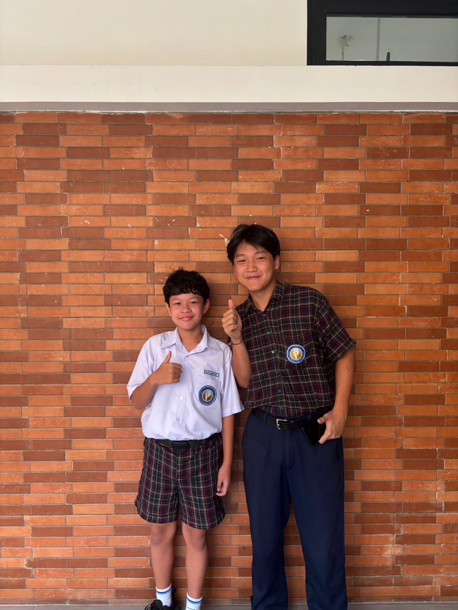
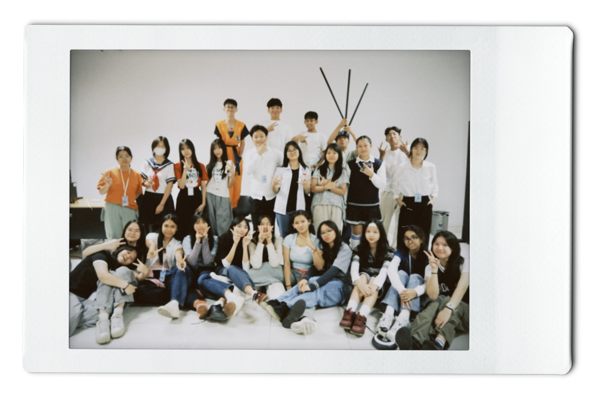
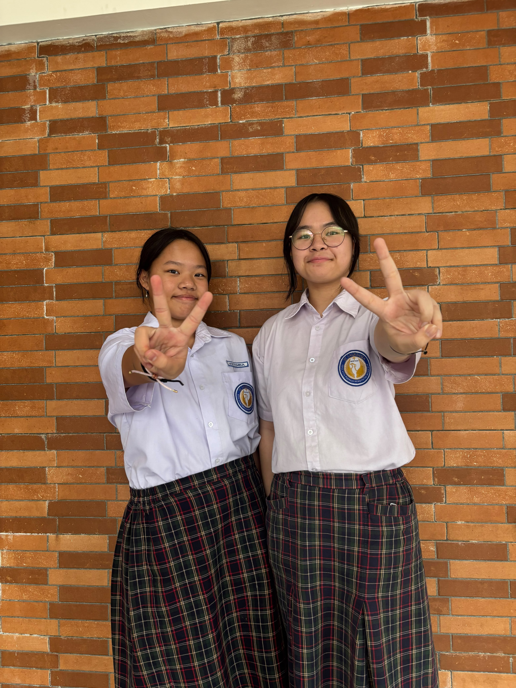

Wayne & Hershel
0
0% CURRENTLY LEADINGSANTA LAURENSIA · SUVARNA SUTERA
A new chapter of leadership begins with integrity, purpose, and a commitment to serve the Laurensian community.
OSIS GENERATION
STUDENT LEADERSHIP ELECTION
ONE LAURENSIAN COMMUNITY

A COMMUNITY TO GROW
Santa Laurensia Suvarna Sutera is a community where students develop their potential, discover their interests, and learn to contribute to the people around them.
Through student leadership, OSIS encourages students to take initiative, work together, and create meaningful experiences for the school community.
Discover the CandidatesYour Voice Matters
Get to know the candidates and follow the live vote count for the OSIS Election 2027.
The People's Choice

0
0% CURRENTLY LEADING
0
0% CURRENTLY LEADINGConnecting to voting data...